Audit Opquast
Évaluation du projet Scrimly à partir de la checklist Opquast, couvrant plusieurs règles par catégorie.
Contenu
-
Règle n° 4 : Les dates présentées dans des formats explicites
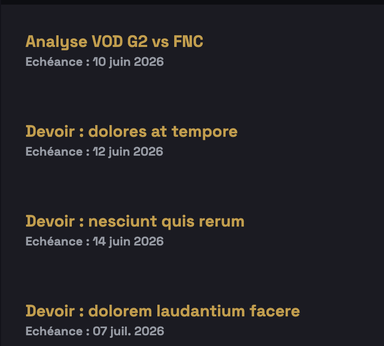
-
Règle n° 13 : La page de résultats de recherche indique le nombre de résultats, le nombre de pages de résultats et le nombre de résultats par page
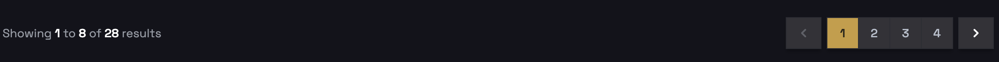
Données personnelles
-
Règle n° 19 : Un mécanisme de prévention des usurpations de compte ou d'identité est proposé
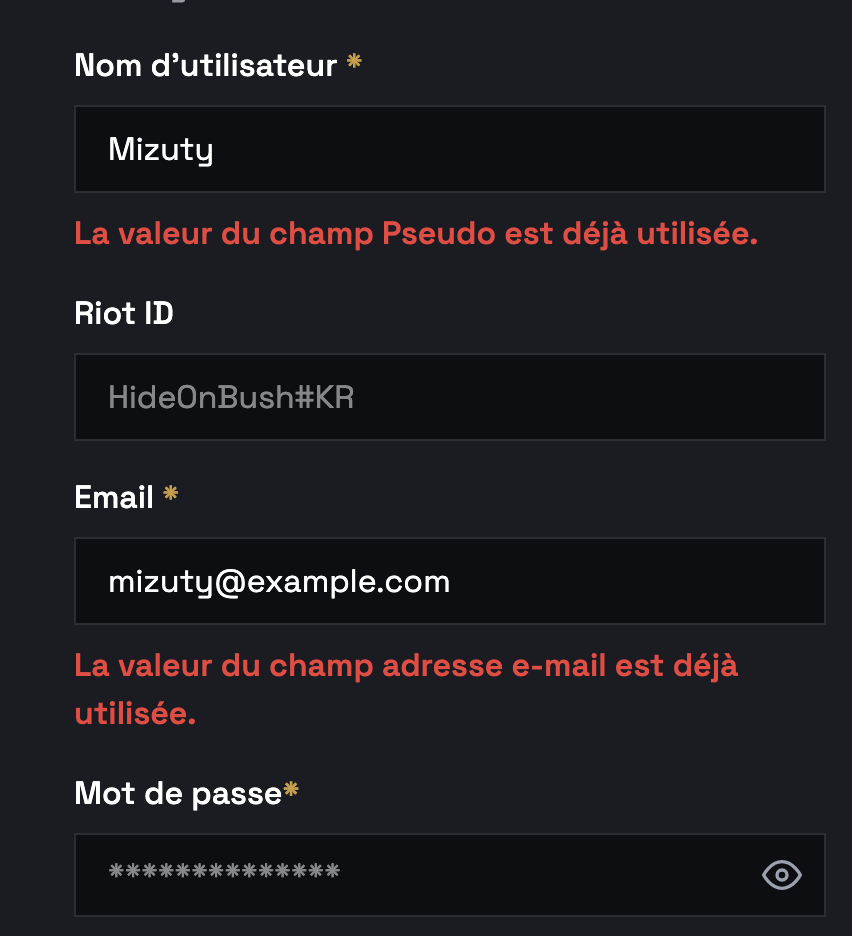
-
Règle n° 23 : Il est possible de se déconnecter des espaces privés
Formulaire
-
Règle n° 69 : Chaque champ de formulaire est associé dans le code source à une étiquette qui lui est propre
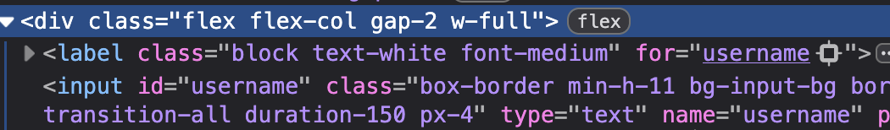
-
Règle n° 71 : L'étiquette de chaque champ de formulaire indique si la saisie est obligatoire
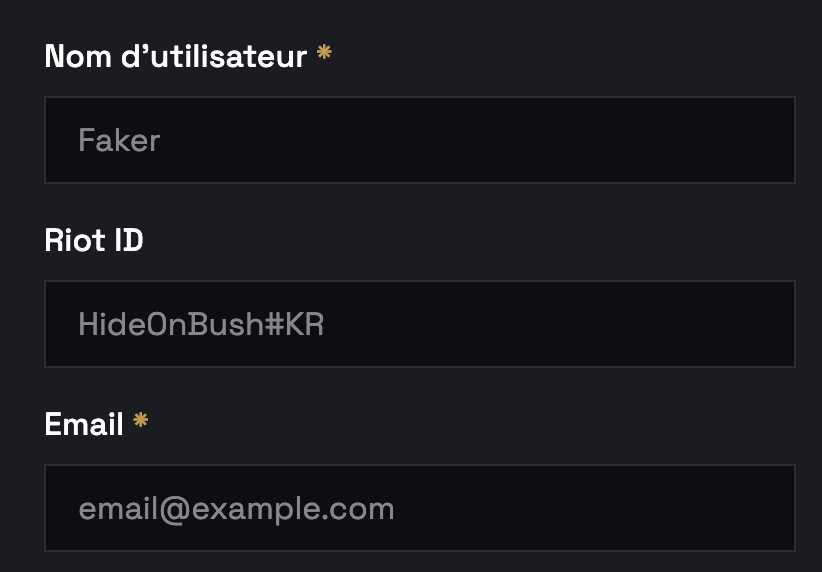
-
Règle n° 95 : Les champs de saisie de type mail, URL, téléphone, nombre, recherche, mot de passe, heure et date sont dotés du type approprié
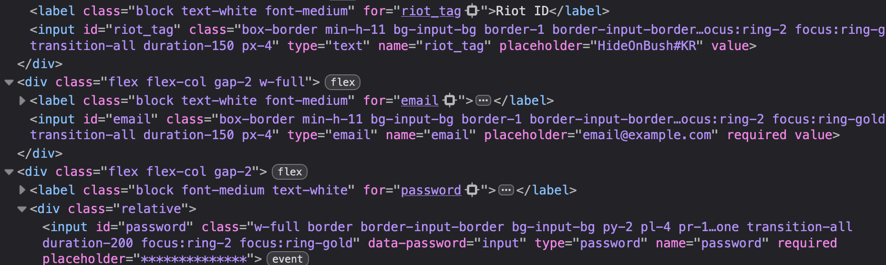
Identification et contact
-
Règle n° 99 : La page d'accueil expose la nature des contenus et services proposés
-
Règle n° 102 : Le titre de chaque page permet d'identifier le site
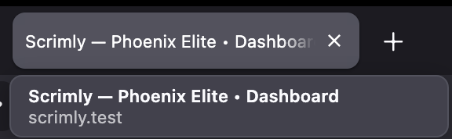
-
Règle n° 103 : Le titre de chaque page permet d'identifier son contenu

Image et médias
-
Règle n° 116 : Les objets inclus sont dotés d'une alternative textuelle appropriée

-
Règle n° 118 : Chaque image porteuse d'information est dotée d'une alternative textuelle appropriée
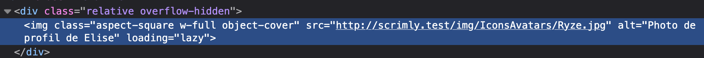
-
Règle n° 141 : Le site n'applique pas le même style aux liens visités et non visités

Internalisation
-
Règle n° 130 : Le code source de chaque page indique la langue principale du contenu
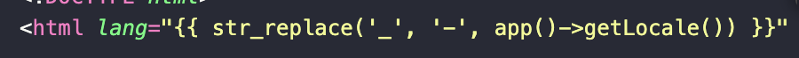
-
Règle n° 132 : Chaque changement de langue est signalé
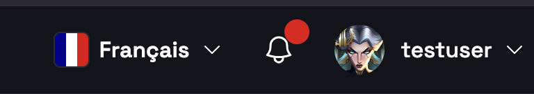
Lien
-
Règle n° 137 : Le libellé de chaque lien décrit sa fonction ou la nature du contenu vers lequel il pointe

Navigation
-
Règle n° 141 : Le site n'applique pas le même style aux liens visités et non visités

-
Règle n° 159 : Les icônes de navigation sont accompagnées d'une légende explicite
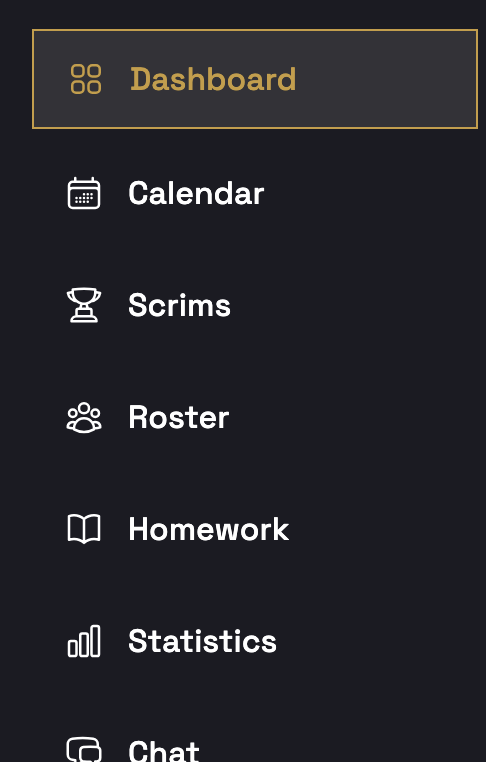
-
Règle n° 165 : Le focus clavier n'est ni supprimé ni masqué
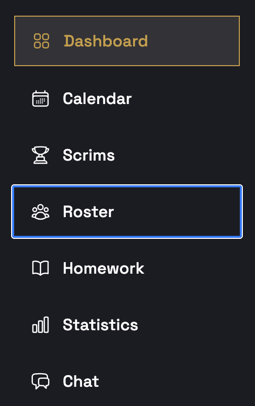
Présentation
-
Règle n° 180 : La charte graphique est cohérente sur toutes les pages
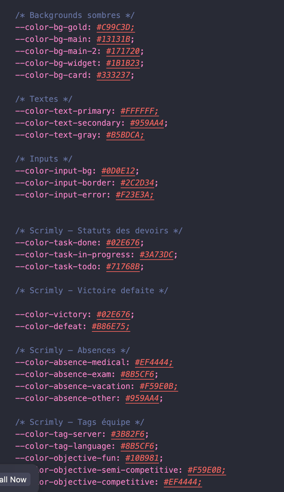
-
Règle n° 190 : Une famille générique de police est indiquée comme dernier élément de substitution
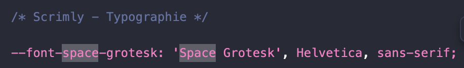
Sécurité
-
Règle n° 202 : Les mots de passe peuvent être choisis ou changés par l'utilisateur
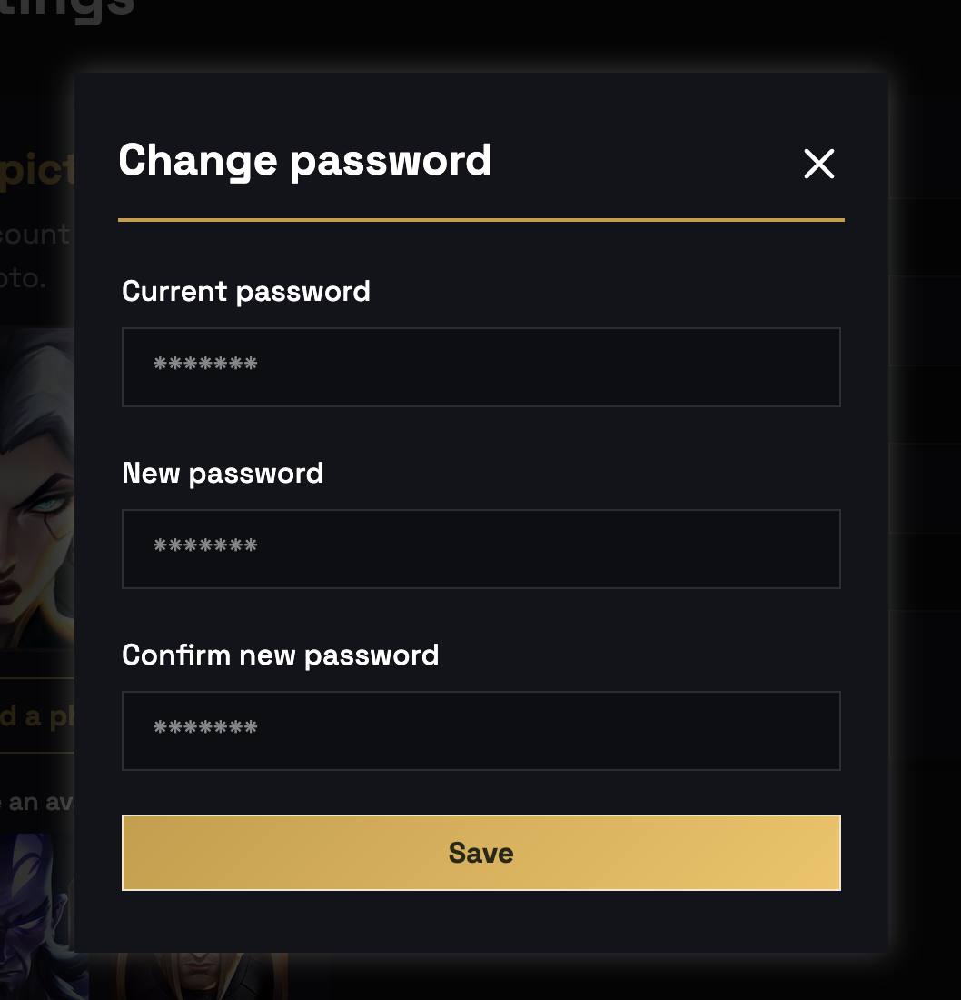
-
Règle n° 205 : Les mots de passe ne sont pas communiqués en clair
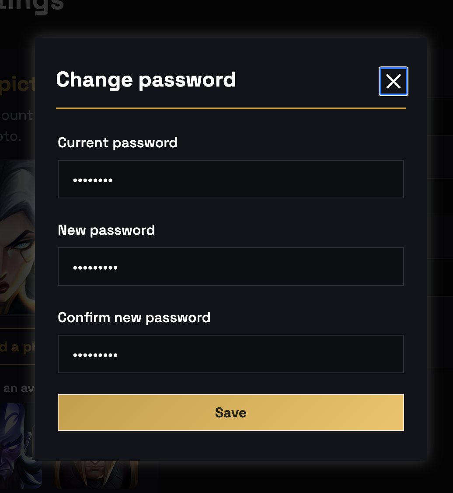
Serveur et performance
-
Règle n° 222 : Le serveur envoie un code HTTP 404 pour les ressources non trouvées

-
Règle n° 223 : Le serveur envoie une page d'erreur 404 personnalisée

Structure et code
-
Règle n° 233 : Le codage de caractère utilisé est UTF-8
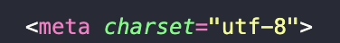
-
Règle n° 234 : Le contenu de chaque page est organisé selon une structure de titres et sous-titres hiérarchisée
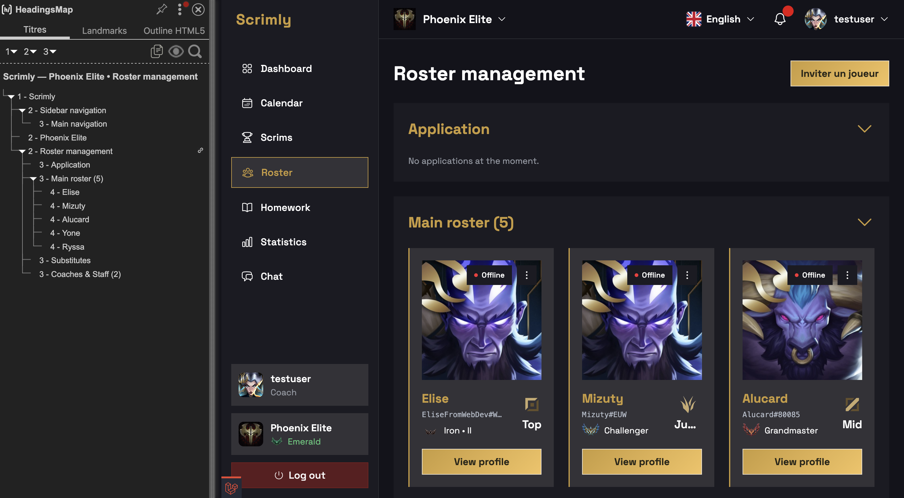
-
Règle n° 235 : Les éléments visuellement présentés sous forme de liste sont balisés de façon appropriée dans le code source
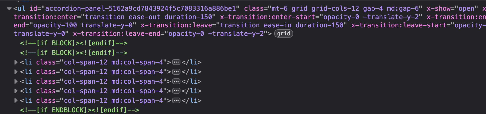